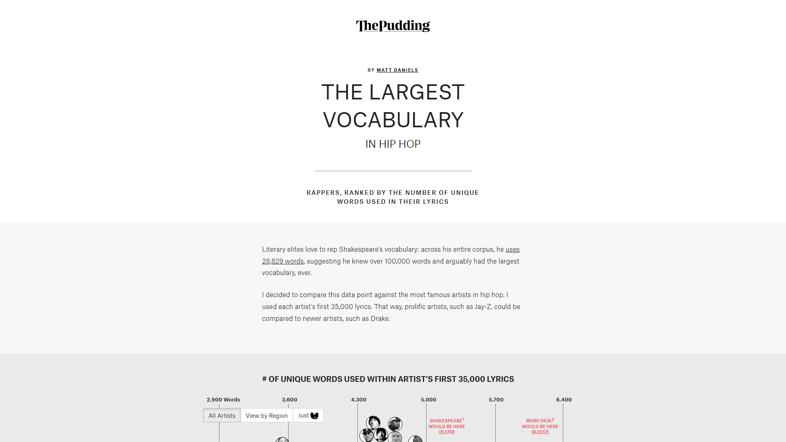
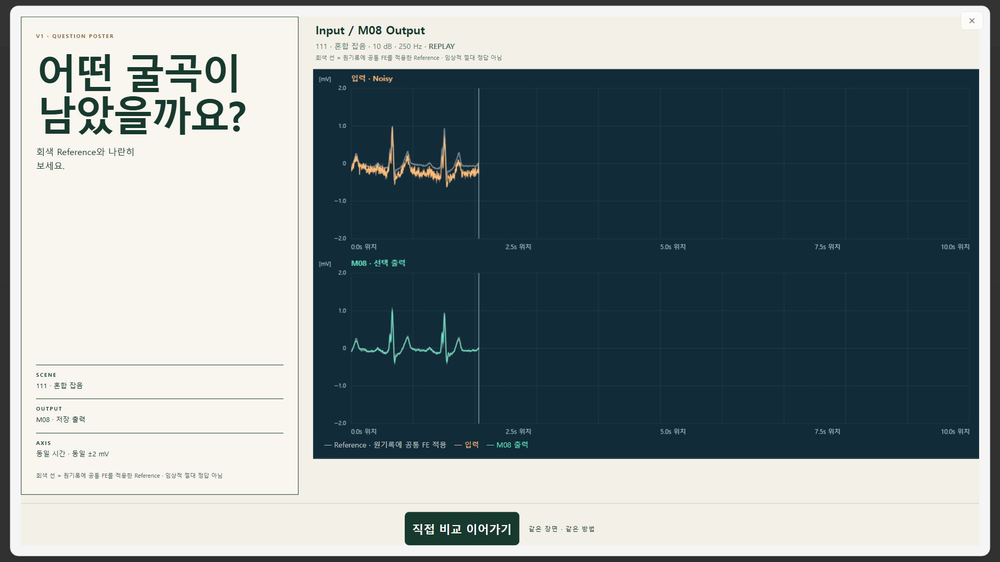
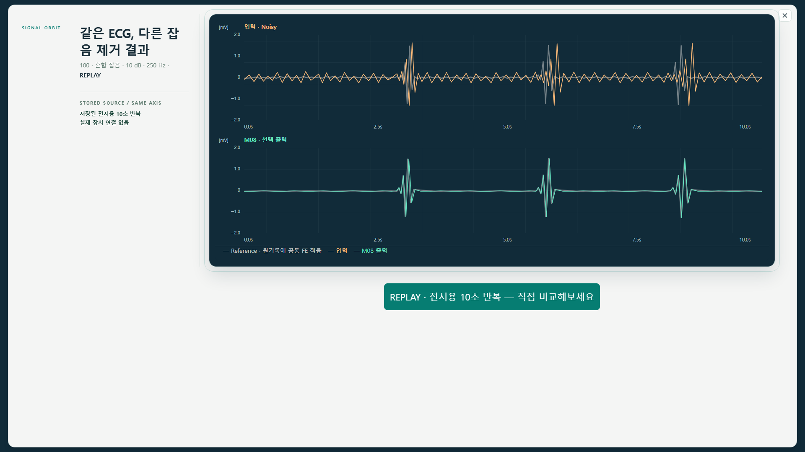
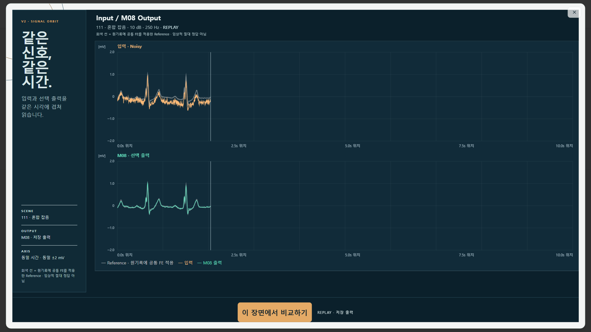
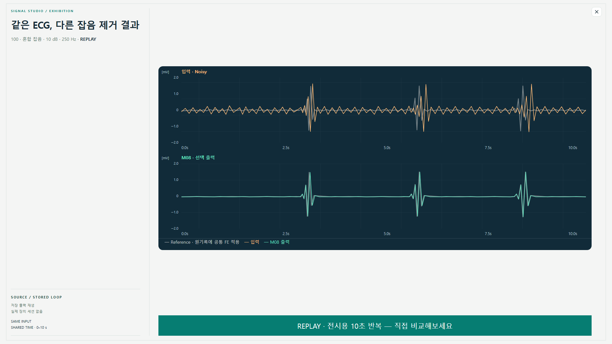
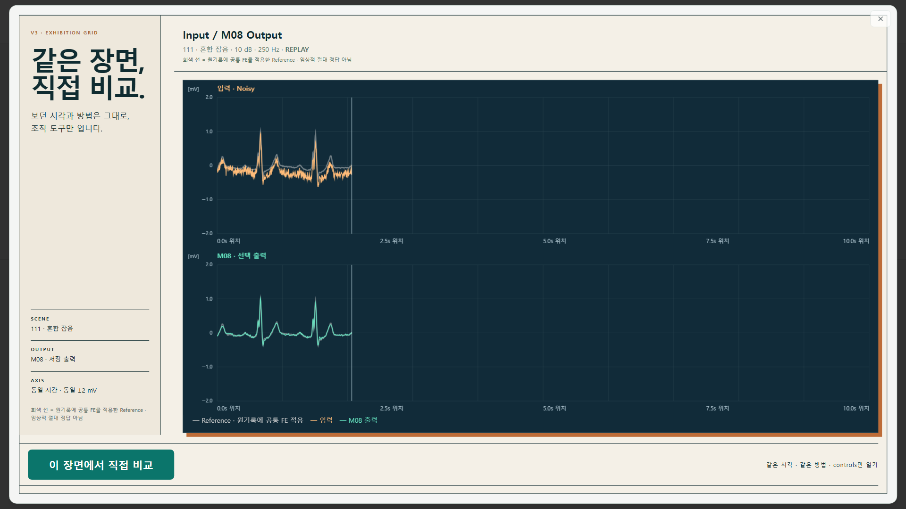

<!doctype html>
<html lang="en">
<meta charset="utf-8">
<title>DUAL-ATTRACT-001 visual QA comparison</title>
<style>
  *{box-sizing:border-box}body{margin:0;background:#111;color:#fff;font-family:system-ui,sans-serif}section{padding:24px;border-bottom:1px solid #555}h1{font-size:18px;margin:0 0 14px}.pair{display:grid;grid-template-columns:1fr 1fr;gap:16px}.frame{background:#222;padding:10px}.frame h2{font-size:13px;margin:0 0 8px;color:#bbb}.frame img{display:block;width:100%;height:auto;background:#fff}
</style>
<section><h1>V1 Question Poster — REF-A05 hierarchy / implementation</h1><div class="pair"><div class="frame"><h2>Source principle capture</h2></div><div class="frame"><h2>V1 rendered implementation</h2></div></div></section>
<section><h1>V2 Signal Orbit tuned — B01 / implementation</h1><div class="pair"><div class="frame"><h2>Frozen B01 draft</h2></div><div class="frame"><h2>V2 rendered implementation</h2></div></div></section>
<section><h1>V3 Exhibition Grid × Same-scene Handoff — B02 / implementation</h1><div class="pair"><div class="frame"><h2>Frozen B02 draft</h2></div><div class="frame"><h2>V3 rendered implementation</h2></div></div></section>
</html>
